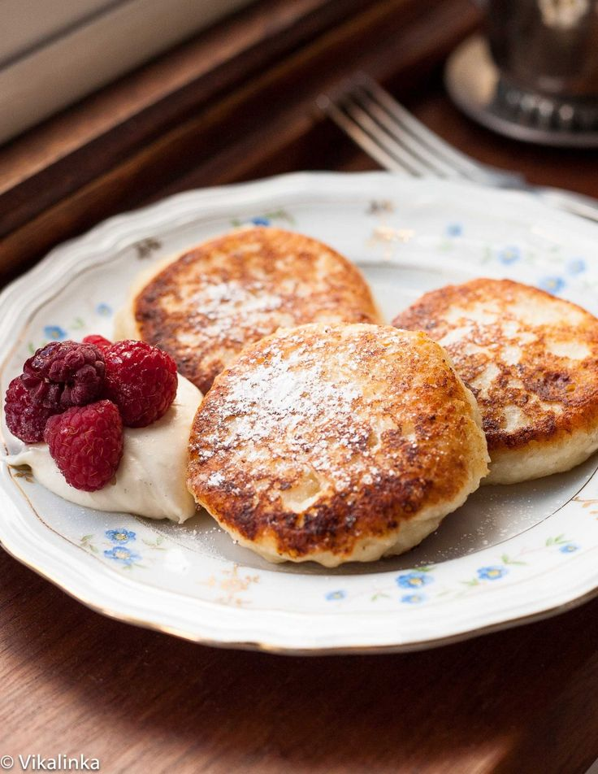

Russian Cuisine
Like any other national cuisine, Russian cuisine is distinct and unique, and like any other national cuisine, it evolved as a result of various environmental, social, geographical, economic and historical influences. The amount and variety of ingredients used in Russian cooking is regarded as the main element of the cuisine. Dough is used in a variety of foods, including pies, cakes, rolls, blinis, and other baked goods, as well as unleavened dough, such as dumplings and homemade noodles.
Because Russia is an Orthodox Christian country with multiple fasts, it has a large number of vegetarian dishes, such as mushrooms, pickles, and other vegetables, as well as a large number of meat, poultry, and fish dishes that are offered on a variety of occasions.
Russian cuisine is one of the most authentic in the world. It has been formed under the influence of severe climate and abundant national traditions. This cuisine was born not under the palace vaults, but in houses of common modest people who had to feed large families.
This is why traditional Russian dishes are nourishing and cooked of the cheapest and available ingredients. Nevertheless, this cuisine cannot be called poor and unvaried as its gustatory combinations can astonish even the most demanding gourmand.
Brief Information about the Russian Cuisine
Russia borders numerous other nations, ranging from the White Sea in the north to the Black Sea in the south, the Baltic Sea in the west to the Pacific Ocean in the east. On a national level, Russians speak Russian and share the same culture and traditions. The cuisine of a country is a vital aspect of its identity. Every country's food is studied by ethnographers because it can disclose its history, daily life, and traditions. The cuisine of Russia is no exception, and it is an integral element of the country's culture and history. In the tenth century, the cuisine of Russia was developed. By the 15th century, the cuisine of Old Russia had become quite diversified.
Natural and geographical factors, of course, had an impact.Dishes created from fish, game, mushrooms, and berries were popular due to the availability of rivers, lakes, and forests.They sowed rye, oats, wheat, barley, buckwheat, and other grains in the fields. It was used to make a variety of grain porridges (каа). Porridge (каа) has traditionally been a popular meal in the country. Porridges are eaten by Russians all of their lives: manna-croup kasha is popular among children, and buckwheat kasha is popular among adults.
Famous Russian Delicacies

About the delicacies
Beef stroganoff
Beef Stroganoff, also known as Beef Stroganov, is a Russian meal made up of sautéed beef chunks with a mustard and smetana sauce. It has grown in popularity all over the world since its origins in Russia in the mid-nineteenth century, with a lot of tweaking from the original recipe. Mushrooms come in a variety of shapes and sizes.
Syrniki
Syrniki, also known as tvorozhniki, is a quark-based pastry made with flour, eggs, sugar, and sometimes vanilla extract. The tvorog can be replaced with pot cheese or farmer's cheese. In vegetable oil or heated butter, the soft batter is molded into cakes that are pan-fried or shallow-fried. Syrniki is called pancake in the US and Syrniki is one of the most famouse food in Russia
Pelmeni Dumplings
Pelmeni are Russian dumplings made from a simple flour, water, egg, and salt dough. They're usually packed with a mixture of ground pig, chicken, turkey, or beef, seasoned with salt & pepper and onions. These delicious dumplings, which are often regarded as Russia's national dish, may be found in homes, cafes, and fine restaurants all over the country.
Shchi
Shchi has been a staple soup in Russian cuisine for generations, and it is said that it has had a significant political impact since its inception. During the mid-1200s, for example, the Mongol ruler Batu Khan is said to have avoided pillaging a small Russian village after being served a pot of Shchi, which he found very tasty. It was also a common staple of the army in Tsarist Russia, made by the gallon in rolling field kitchens. It was also a common staple of the army.
- Barretto, Kurt Staniel
- Bauzon, Shayne Victor
- Garcia, Marcus Ram
- Gomez, Josh Dominic
- Lebosada, Jagg Aethan